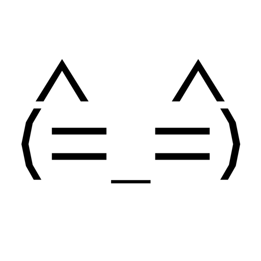

反応を楽しむ
クリックしたり、撫でたり、選択肢を選んだり。ゴーストごとの会話や反応を、吹き出しで楽しめます。

UtataneUKAGAKA, ON YOUR MAC.
いつものデスクトップに、 話し相手を。
画面の片隅で話したり、着替えたり、ときどき構ってほしそうにしたり。伺かのキャラクターたちと、Macでも。
MacではじめるmacOS 14以降 · Apple Silicon / Intel

Macのアプリとして対応エンジンはネイティブ実行
キャラクターを最初から同梱「りあ」というキャラクターと吹き出し付き
互換性は、開発中SSPの完全互換ではありません
01 / EVERYDAY COMPANY
「ゴースト」は、伺かのキャラクターと会話データのこと。Utataneはその居場所になるアプリです。キャラクター「りあ」が最初から入っているので、別途ゴーストを探さなくても試せます。
クリックしたり、撫でたり、選択肢を選んだり。ゴーストごとの会話や反応を、吹き出しで楽しめます。
シェルやバルーンを切り替えて、表示サイズも調整。対応するゴーストなら、アニメーションや着せ替えも。
配布されているNARファイルを追加。展開済みのSSPフォルダから、ゴーストとバルーンを取り込むこともできます。
02 / BEFORE YOU BRING YOUR GHOST
同じエンジンでも、使っている機能によって動作は変わります。お気に入りを連れてくる前に、対応範囲を確認してください。
03 / MAKE YOURSELF AT HOME
最新の開発版から Utatane-macOS.zip を取得。Apple SiliconとIntelの両方に対応しています。
ZIPを展開して、Utatane.appを「アプリケーション」フォルダへ。
Utataneを開くと、同梱キャラクター「りあ」を表示できます。ほかのゴーストは、あとから追加できます。
現在の開発版は未署名です。入手元を確認したうえで一度起動を試し、「システム設定」→「プライバシーとセキュリティ」から起動を許可してください。
ターミナルを使う場合は、アプリを「アプリケーション」フォルダへ移動してから、次のコマンドを実行する方法もあります。
sudo xattr -rc "/Applications/Utatane.app"このコマンドは、Utatane.app内の拡張属性（隔離属性を含む）を再帰的に削除します。公式の配布元から入手し、信頼できると確認したアプリにだけ使ってください。署名や安全性を検証するコマンドではありません。
04 / A FEW MORE THINGS
対応するYAYA(文)・KAGARI・SHIOLINK(MiyoJS等)・里々・華和梨・美坂・灯はネイティブで実行します。ただし、ゴーストが別のWindows DLLなどに依存する場合は、Wineが必要になることがあります。
Materia付属のfirstは、対応版の会話データを読み取る専用の仕組みでWineなしに動作します。ファイルは同梱していないので、正規に入手したものを自分で用意してください。一般のWindows DLLを実行する機能ではありません。
アプリとこのページは日本語・英語・簡体字中国語・繁体字中国語・韓国語に対応しています。ゴーストの会話は作者の用意した言語のままで、自動翻訳はされません。
ゴースト名、Utataneのバージョン、起きたことを添えてGitHub Issuesへ。まだ互換性を増やしている途中なので、表示や文字コード、イベントの違いが残っています。